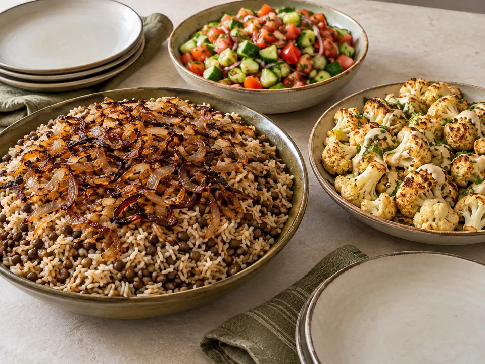
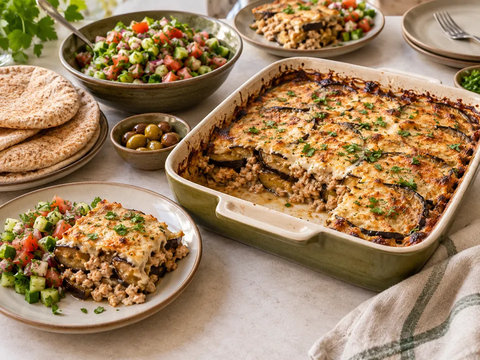

עוף
עוףקציצות עוף ועדשים ברוטב לימוני
עם אורז לבן וסלט כרוב וגזר קראנצ׳י
₪10.1–12.6לסועד · אומדן לכמויות במתכון
למתכון המלא ←12 רעיונות לארוחה משפחתית מלאה ב־8–15 ₪ לסועד. אוכל ביתי עם ירקות, דגנים, קטניות וטעם של עוד.
מה מבשלים היום? ←המחיר כולל את הכמויות שמשתמשים בהן, גם שמן ותבלינים. אריזות שלמות יעלו יותר. איך חישבנו?
עוףעם אורז לבן וסלט כרוב וגזר קראנצ׳י
 עוף
עוףארוחת תנור זהובה עם סלט ישראלי קצוץ
 טבעוני
טבעוניספגטי ברוטב עשיר וסלט עם טחינה לימונית
 צמחוני
צמחוניביצים ברוטב פלפלים, פיתות מלאות וסלט קצוץ
 עוף
עוףרצועות עוף עם כרוב, גזר ופלפל ברוטב סויה וג׳ינג׳ר
 טבעוני
טבעוניתבשיל אדום עם תירס, אורז וטחינה בצד
 דגים
דגיםעם קוסקוס וחומוס שסופגים את כל הרוטב

טבעוניאורז ועדשים, בצל שחום, טחינה וסלט רענן
 חלבי
חלבי טבעוני
טבעוניתבשיל כתום עם תרד, אורז וסלט מלפפונים
 עוף
עוףעם חומוס, גזר, מעט צימוקים וסלט טרי

עוףתבנית ריחנית עם פיתות וסלט ירקות
נסו מרכיב אחר או חזרו לכל המתכונים.
זהו אומדן עלות לחומרי הגלם שנצרכים במתכון, שנערך ב־21.10.2026. הוא כולל גם חלק יחסי של שמן, שום ותבלינים. הטווח לכל סועד הוא עלות אותה ארוחה בחלוקה לחמישה או לארבעה סועדים; הכמויות במתכון נשארות זהות.
לכל מרכיב מוצגת עלות משוערת עבור הכמות שבמתכון. לדוגמה, 200 גרם משקית עדשים אינם מחיר השקית כולה. קנייה של אריזות שלמות תעלה יותר ותשאיר מצרכים לארוחות הבאות. עלויות חשמל, גז, משלוח ונסיעה אינן כלולות.
מחירי הייחוס לצורך התכנון כוללים, לדוגמה, חזה עוף בכ־39.90 ₪ לק״ג, שוקיים בכ־31.90 ₪ לק״ג, דג לבן קפוא בכ־40 ₪ לק״ג נטו ואורז בכ־10 ₪ לק״ג. המחירים בפועל תלויים במותג, בכשרות, בעונה ובסניף. אלה הנחות תכנון, ולא הצעת מחיר חיה לסל בסופר מסוים.
המתכונים עדיין אינם מחוברים אוטומטית למחירי הברקודים באתר. טרם נבדק שכל המרכיבים זמינים יחד בסניף אחד במחיר הזה. כשנחבר מוצרים מדויקים, נוכל להציג גם השוואת סלי קנייה.